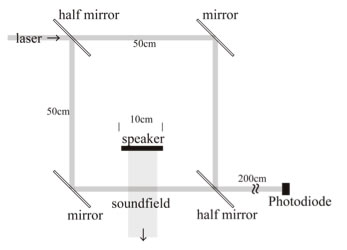
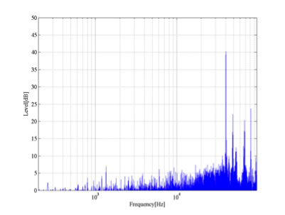

Presently, many methods to assay physical features of specimens with interference of light have been established. The principal benefit of those techniques is that the existence of instruments does not interfere with physical features of a sound field. In this research, we record sound fields as fluctuations of refractive indexes by measuring diffraction of a monochromatic light field. In lieu of using extremely convergent laser, we attempt to record sound fields by observing diffraction of a monochromatic parallel pencil and to exemplify the principle of acousto-optical effect.
Based on the principle of diffraction of monochromatic parallel pencil caused by sound, we record sound fields by observing the fluctuation of intensity of light wave. To enhance the efficiency of observation, we use a Mach-Zehnder interferometer as shown in the diagram Figure 1. We use a He-Ne Laser as the light source, and ultrasonic parametric speakers to create the 40kHz pure tone planar sound field.
Using the system described above, we record a sound field (40kHz pure tone planar sound field). Figure 2 below is the amplitude frequency character of the intensity fluctuation of the diffracted light which is obtained from the photodiode. After that we subtract the frequency character of background noise from that of the recorded signal. From this spectrum, it turns out that there is 40kHz pure tone sound field within the tested light path. That is, our system successfully grasps sound fields without corporeally interfering them.
Experiment Design, Theoretical Testification
- Bachelor's Thesis
- Included as a chapter in Technical Report for Collaborative Research w/ YAMAHA, Hamamatsu, Japan, 2011
More details available on this PDF file.